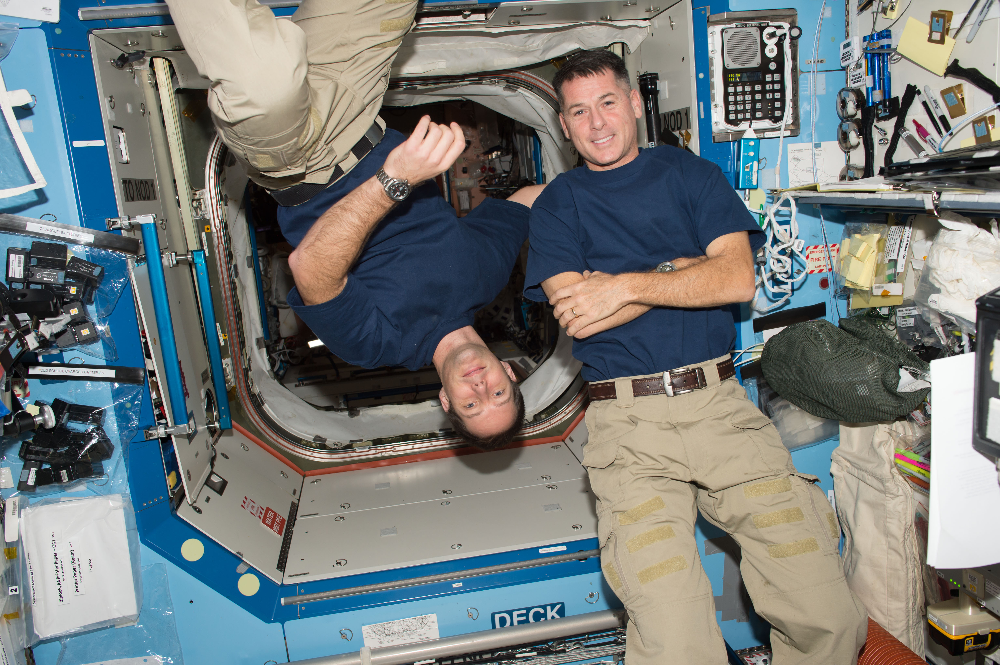

Texas Students to Hear from Astronauts on International Space Station
Students from Brownsville, Texas, will hear from astronauts aboard the International Space Station during a call at 10:15 a.m. EDT Tuesday, May 11, that will air live on NASA Television, the NASA app, and the agency’s website. NASA astronaut Shane Kimbrough and ESA (European Space Agency) astronaut Thomas Pesquet will answer prerecorded video questions from high school students at the Brownsville Independent School District. The downlink is being coordinated by the Children’s Museum of Brownsville, the Brownsville Independent School District, and the South Texas Astronomical Society. Their Harnessing Opportunities through Perseverance in Exploration initiative is intended to spark interest in science and space exploration among students in the Brownsville and greater Rio Grande Valley communities.
